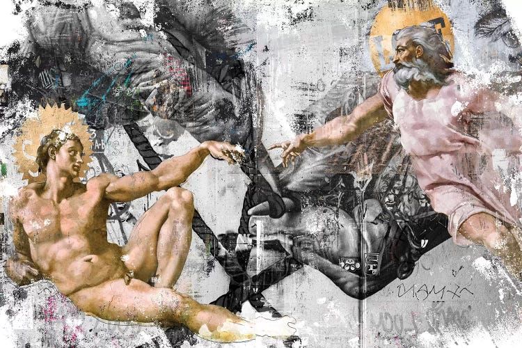
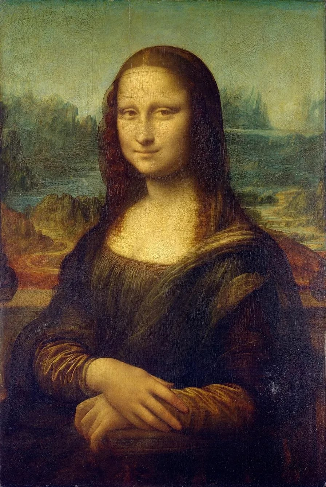
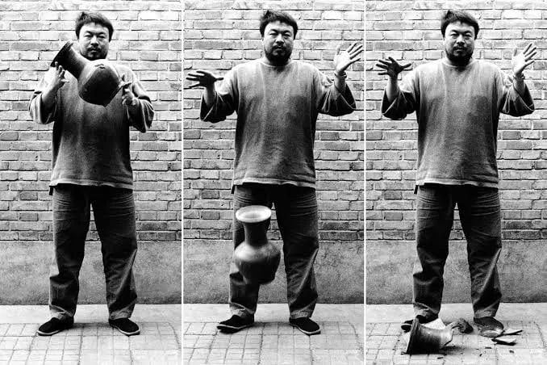

Magazine Portfolio
From History to Contemporary Expression
Tracing the Past, Inspiring the Present.

Featured
Then & Now
A Renaissance portrait meets a smashed urn. See how art changed from then to now.
See the comparison

About this project
Art Through Time
This magazine portfolio is our GEARTS final project. It traces how art has changed from history to today.
We do not copy historical artworks. We study their meaning, reinterpret them, and respond with original art about our own generation.
Objective
Understand, reinterpret, createWhat's inside
5 periods · 10 originalsContent
20 page flipbookCourse details
BSIT-3B